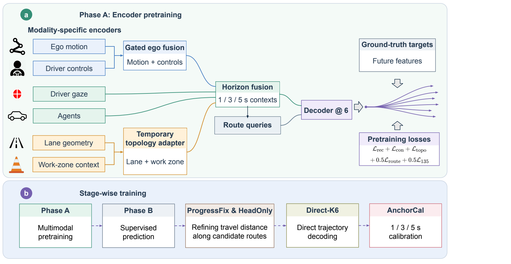

Ego-trajectory prediction · Roadway work zones
WZDrive.
Ego-Trajectory Prediction for Autonomous Driving in Roadway Work Zones Using Multimodal Human-Driving Data
Temporary lanes, nearby traffic, and road workers reshape how drivers move through work zones. WZDrive learns from human driving and scene context to predict possible future vehicle paths.
See the work-zone setting
A short view of the simulation, captured signals, and prediction task.
82-second silent project demo.
WZDrive-Data
Human driving behavior recorded across controlled work-zone encounters.
The collection platform pairs a human driver with either prerecorded workers or a human-operated VR worker. It records driver controls and gaze alongside vehicle motion and simulated scene information.
The prediction model uses ego motion, controls, gaze, agents, lane geometry, and work-zone context. The wider dataset also retains camera and segmentation media; those images are not direct inputs to this model.
From context to candidate paths
Multimodal encoding and stage-wise training for short-horizon trajectory prediction.

Prediction results
Six-candidate prediction on the work-zone benchmark.
Means and standard deviations are from three seeds. The comparison baseline differs by metric: LAFormer with work-zone context for minADE6, and DeMo without work-zone context for minFDE6.
Code and example data
Model code, collection code, and a small data sample.
The sample is not the full benchmark and does not include pretrained weights or a complete Unreal build.